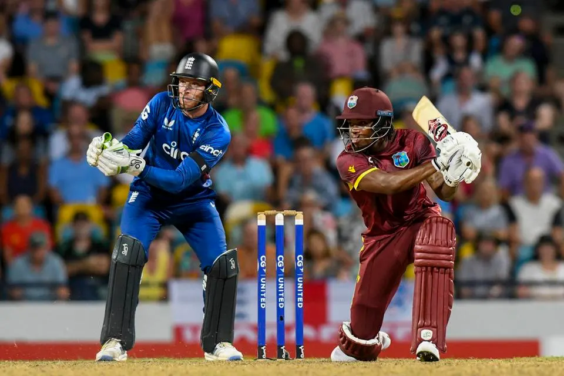

Home
Welcome to the home of ODI's!

ODI (One Day International) is a format of cricket consisting of 50 overs per inning and 2 innings (1 per team). It is played in colored clothing.
The ODI Cricket World Cup is an event held every 4 years.
Most Matches:
Sachin Tendulkar (IND) - 463
Mahela Jayawardene (SL) - 448
Sanath Jayasuriya (SL) - 445
Kumar Sangakkara (SL) - 404
Shahid Afridi (PAK)- 398
Inzamam-ul-Haq (PAK) - 378
Ricky Ponting (AUS) - 375
Wasim Akram (PAK) - 356
MS Dhoni (IND) - 350
Muttiah Muralitharan (SL) - 350
Most Runs:
Sachin Tendulkar (IND) - 18,426
Kumar Sangakkara (SL) - 14,234
Virat Kohli (IND) - 13,848
Ricky Ponting (AUS) - 13,704
Sanath Jayasuriya (SL) - 13,430
Mahela Jayawardene (SL) - 12,650
Inzamam-ul-Haq (PAK) - 11,739
Jacques Kallis (SA) - 11,579
Sourav Ganguly (IND) - 11,363
Rahul Dravid (IND) - 10,889
Most Wickets:
Muttiah Muralitharan (SL) - 534
Wasim Akram (PAK) - 502
Waqar Younis (PAK) - 416
Chaminda Vaas (SL) - 400
Shahid Afridi (PAK) - 395
Shaun Pollock (SA) - 393
Glenn McGrath (AUS) - 381
Brett Lee (AUS) - 380
Lasith Malinga (SL) - 338
Anil Kumble (IND) - 337